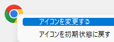

通常コマンド
通常コマンドはファイルやURLを関連付けられたプログラムで表示するためのコマンドである。
よく使うプログラムやファイル、URLに対して任意の名前を設定し、その名前で実行することができる。
基本

コマンドの名前
入力画面からコマンドを実行するためのキーワードコマンドの説明
入力画面でのキーワード入力時にコメント表示欄に記載される文字列。コメント表示欄のテキストを検索に使用する
チェックすると、コマンドの説明に入力したテキストもコマンドの絞り込みに使用する
例えば上の図の場合、「起動」と入力した場合にも、コマンドが候補にあがるようになる実行ファイル・URLなど
実行ファイル(*.exe)を指定すると、その実行ファイルが実行される
URL(http://...https://...)を指定すると、ブラウザでそのURLを表示する
その他の拡張子のファイルを指定した場合、拡張子に関連付けられたプログラムでそのファイルを開くパラメータ
実行ファイル(.exe)を指定したときに、実行ファイルに渡すパラメータを指定する$*: 入力欄でコマンド名の後にスペース区切りで入力した全ての文字列に置換する$1/$2/$3... : 入力欄でコマンド名の後にスペース区切りで入力した1番目/2番目/3番目...の文字列に置換するそのほかにマクロを利用することが可能
作業フォルダ
実行するときのカレントディレクトリを指定する表示方法
通常表示/最大表示/最小表示 を選ぶことができる
起動するプログラムによっては指定が効かないこともある管理者権限で実行
チェックすると、管理者権限でプロセスを起動する
.exe、.batのときのみ選択可能ホットキー
コマンドを呼び出すキーを設定できる。設定したキーを押下すると、コマンドを実行できる。

左上のアイコン欄
アイコン欄を右クリックすると、コンテキストメニューが表示される。
アイコンを変更する
選択すると、ファイルを選択するダイアログが表示される。画像ファイルを選択すると、その画像をアイコンとして使用することができる。
PNG/JPG/GIF/BMP/ICO形式のファイルが利用可能アイコンを初期状態に戻す
選択すると、変更したアイコンを元に戻すことができる
環境変数
起動するプログラムに対して環境変数を追加定義することができる。
既存の環境変数と同じ名前を定義した場合は値を上書きする。
追加する環境変数の一覧
追加する環境変数のリスト追加
クリックすると、変数を追加する画面が表示される
編集
クリックすると、リスト上で選択している変数を編集する画面が表示される
削除
クリックすると、リスト上で選択している変数を削除する一括追加
クリックすると、環境変数を一括で追加するための画面(下記)を表示する
その他
実行時引数あり/なしで起動するファイルを分ける
入力欄で、コマンド名の後に文字列を入力した場合とそうでない場合とで、実行するファイルを分けるときにチェックする
【実行時引数なし】直下に、コマンド名のみを入力した場合に実行するファイル(やパラメータ)を指定する想定する使い方
パラメータがある場合→検索、ない場合→検索サイトのトップページを表示
キーワードが完全一致し、かつ、候補が一つのときに自動でコマンドを実行する
入力欄に入力したキーワードがコマンド名に完全一致し、他の候補がない場合に、コマンド実行を自動確定(実行)する条件に合致するウインドウが存在する場合にパスを起動せずにウインドウをアクティブにする
指定条件(ウインドウクラス名/ウインドウタイトル)に該当するウインドウが存在する場合に、それをアクティブにして、パスで設定したファイルを実行しない。想定用途: アプリを複数起動させずに使いたい場合に用いる。(アプリがすでに起動済の場合は新しいプロセスを起動せずに、既存のウインドウに切り替える)
ウインドウタイトル
ウインドウのタイトルを指定する。指定しなかった場合はウインドウクラスのみで判断するウインドウクラス
ウインドウクラス名を指定する。指定しなかった場合はウインドウタイトルのみで判断する正規表現を使用する
チェックすると、ウインドウタイトルとウインドウクラスの文字列を正規表現パターンとして扱うテスト
指定した条件に該当するウインドウを探す。ウインドウが見つかると、そのプログラムのタスクバージョンのアイコンが点滅する。
実行時の動作
押下キー |
動作 |
|---|---|
|
ファイルを実行する or ディレクトリを開く or URLを開く |
|
パス(ファイルが存在するディレクトリ)を開く |
|
プロパティを開く |
|
管理者権限で実行する |